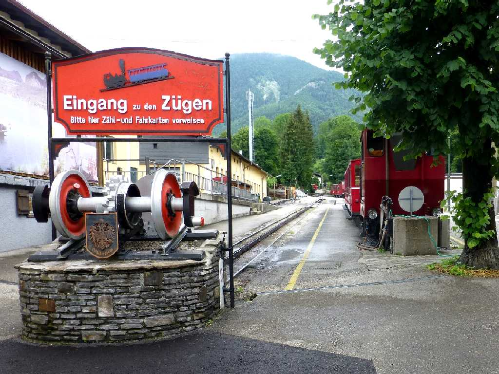
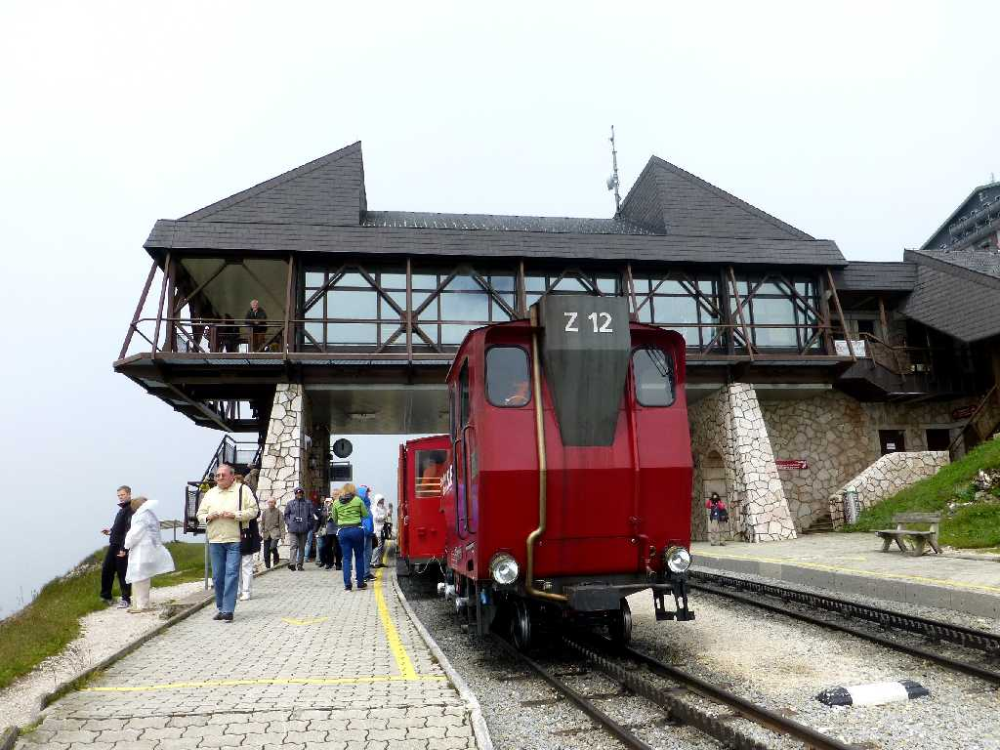
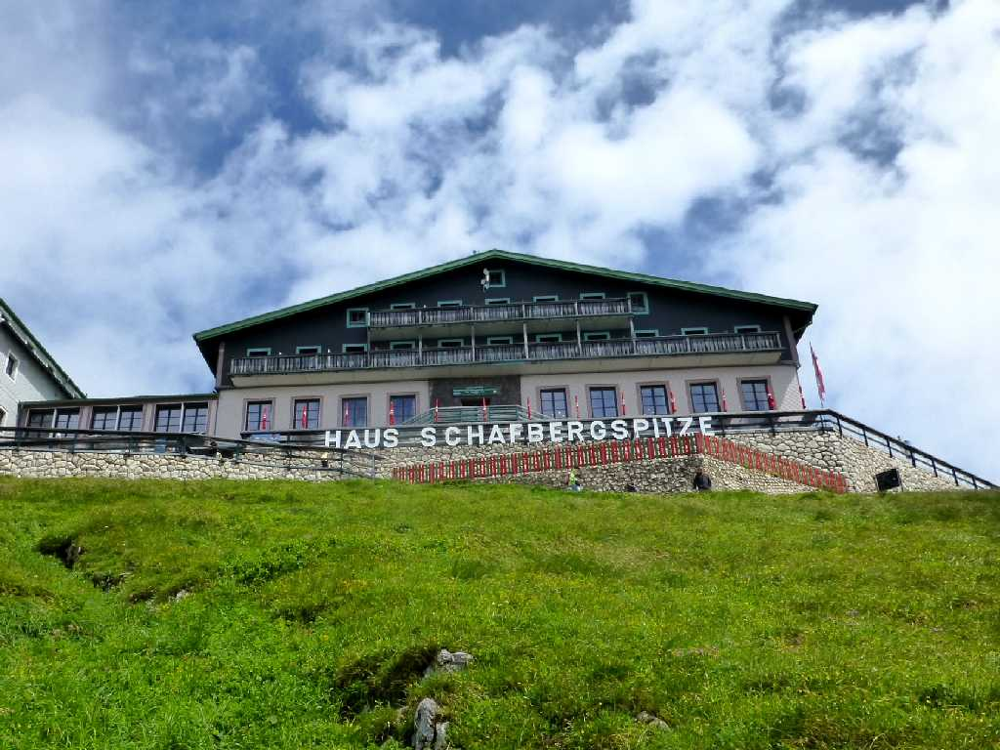
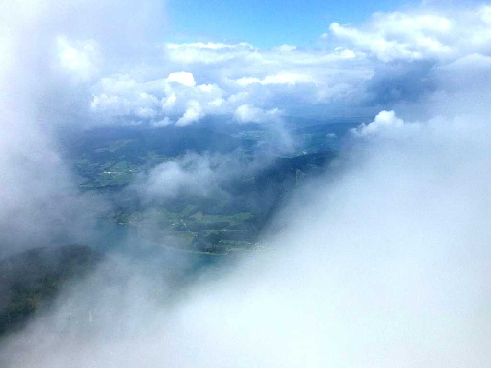
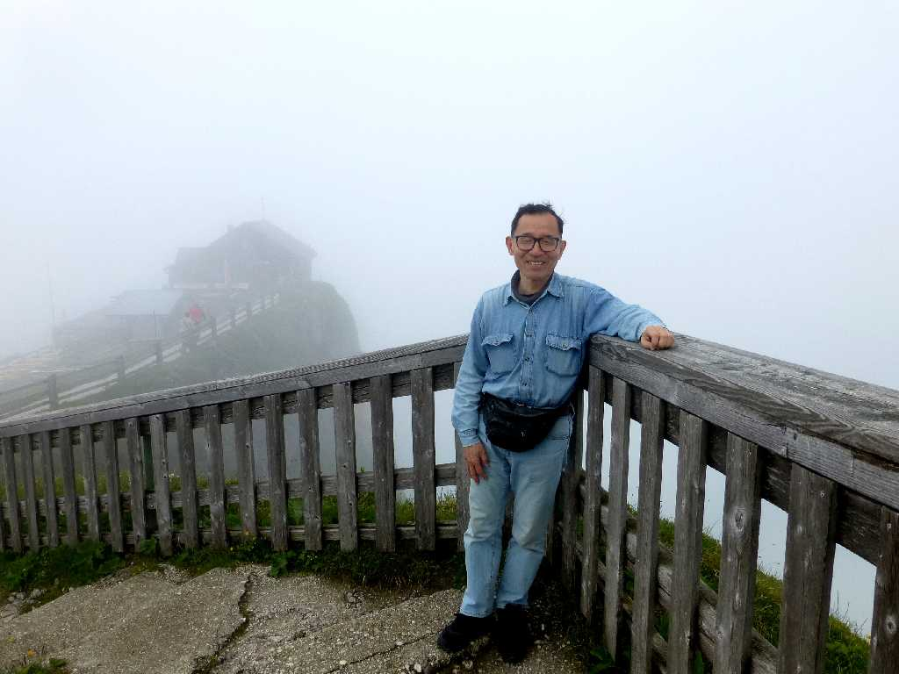
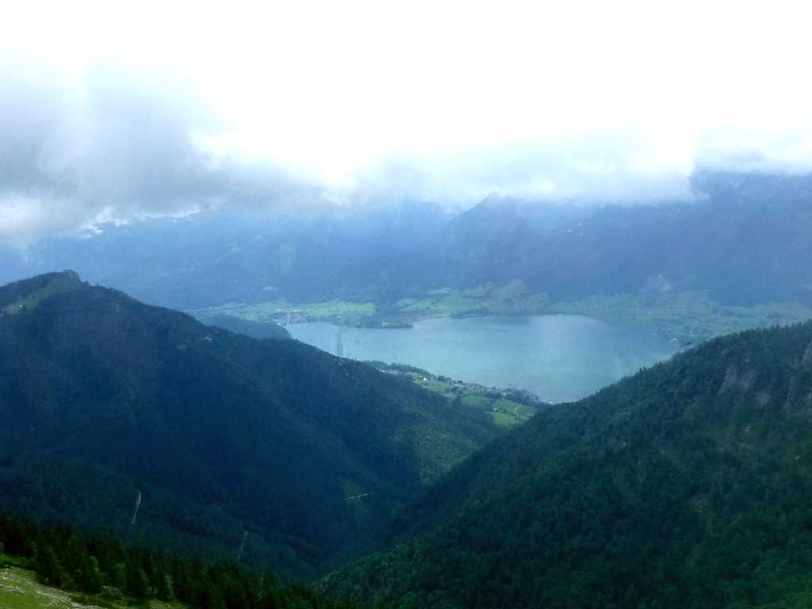
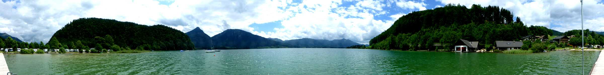

Schafbergbahn Wolfgang
サンクトウオルフガングから標高１７８３ｍのシャーフベルク山に向かう約１２０年前に創られたシャーフベルク登山鉄道

Bergstation Schafbergbahn
標高差１,１９０ｍ全長５,８００ｍの山道を登り３５分で山頂駅に到着

Schafberg

Mondsee Schafberg
シャーフベルク山頂より月の湖を意味するモンド湖を望む

June 24 2015 Schafberg

Wolfgangsee Schafbergbahn
湖水地方のウオルフガング湖が車窓から観られるオーストリアの宝石箱と云われるザルツカンマーグート地方の景観

Wolfgangsee
ウオルフガング湖
June 24 2015 Wolfgang